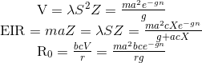
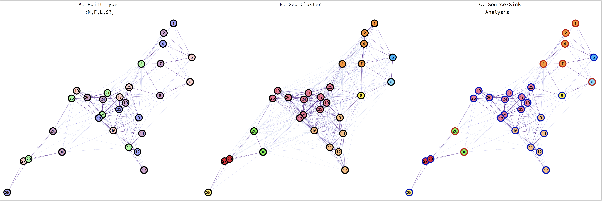
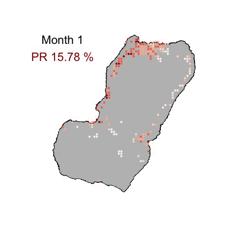
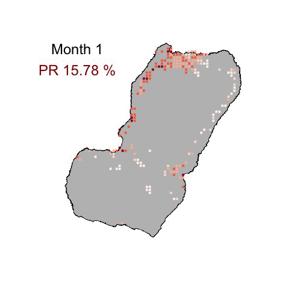

Consider a spherical mosquito...
Mathematical Models of Mosquito-borne Pathogen Transmission

- University of California, Berkeley
Sean Wu, Biyonka Liang, Héctor M. Sánchez C., John M. Marshall
- Institute for Health Metrics and Evaluation, Seattle
Daniel Citron, Qian Zhang, John Michael Henry, David L. Smith
Agenda
1. Theory of Mosquito-borne Pathogen Transmission
2. Relevant Quantitative Measures of Transmission
3. Simulating Mosquitoes
4. Simulating People
5. Transmission Landscapes
6. Application
Quantitative Measures of Pf Transmission
Under certain assumptions, a set of quantities completely describes transmission:

But reality is not a well-mixed chemostat, how do we build mechanistic models to represent complex disease ecologies?
Continuous-time Discrete Event Simulation
Models of Within-host Infection Dynamics
Starting from classical assumptions, a series of models based on stochastic processes can be built:
PfSI: Enhanced SIS Model
 PfMOI: Multiplicity of Infection Model
PfMOI: Multiplicity of Infection Model
 PfLOME: Lifetime Ontogeny of Malaria Epidemiology
PfLOME: Lifetime Ontogeny of Malaria Epidemiology
Transmission Ecology
Disease ecology is the superposition of multiple stochastic processes which generate the data epidemiologists and entomologists collect.
 Landscape Analysis
Landscape Analysis
In a real scenario, data is messy, incomplete, and biased. By testing algorithms in silico, methods for analyzing pathogen dispersal can be developed

Models Support Policy
Spatial targeting of anti-sporozoite vaccine trials on Bioko Island
 
Microsimulation

Microsimulation